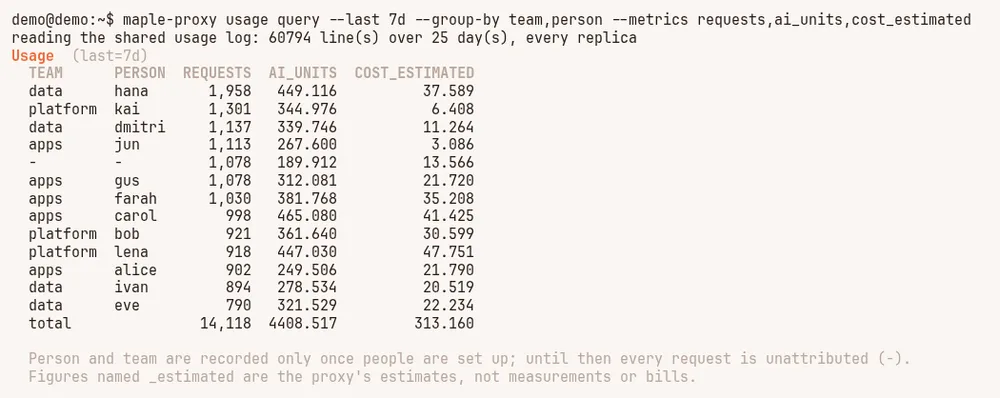
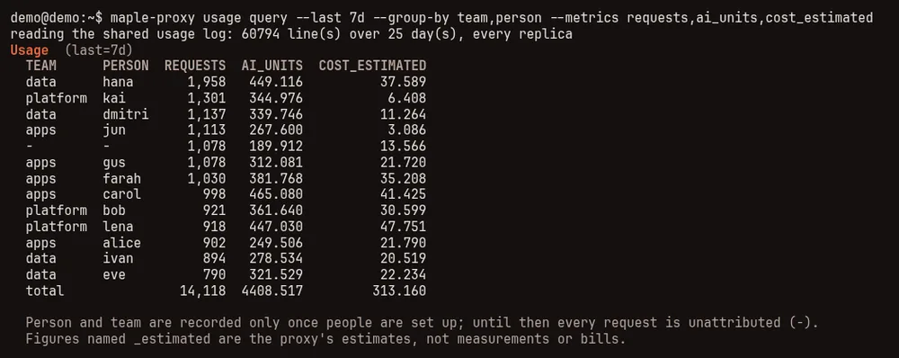
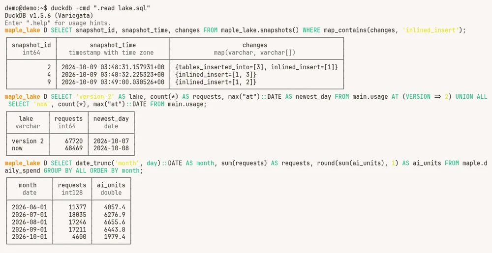
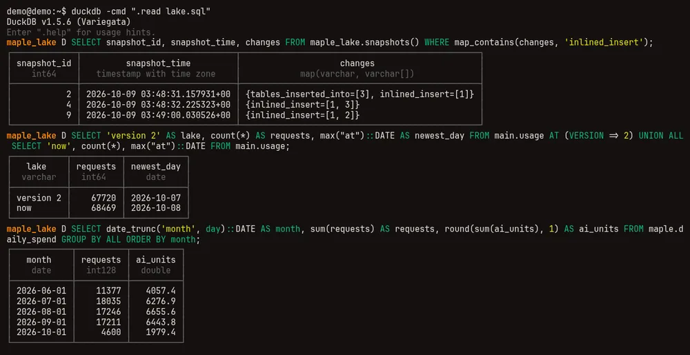

Query your usage #
On this page
A cookbook of questions people ask of their usage, each with the command and what it printed. Every recipe here was run as shown; the output comes from a synthetic sample log (made-up people, models and traffic), so your figures will differ. Which store to query when is on Your data.
Figures are AI units as the providers reported them, or list-price estimates named _estimated. Neither is a bill,
and the two are never added together.
In plain words #
- What it is. Recipes: the questions people ask of their usage, each with the command and its output.
- What to do. Copy a recipe and run it.
maple-proxy usage queryneeds nothing else; the DuckDB recipes need theduckdbprogram. The setup page's Data & storage tab has the commands to start DuckDB on your own log.
Before you start #
maple-proxy usage queryneeds nothing else. It reads the daily files on this machine, and in central mode the shared PostgreSQL, so run it on a replica there. It works whether the proxy is running or not.- DuckDB recipes need DuckDB's command line (install it), plus
INSTALL ducklakeonce for the lake andINSTALL postgresonce for PostgreSQL. -tablein the commands below only makes DuckDB print plain-text tables; leave it out for its usual boxes.
With usage query #
The filters and --group-by keys are listed in Filter your data; --metrics
picks the columns (maple-proxy usage query --help lists them all).
Spend by person this week #
On a team's proxy (here a replica in central mode, reading the shared PostgreSQL):
$ maple-proxy usage query --last 7d --group-by person,team --metrics requests,ai_units,cost_estimated
reading the shared usage log: 60794 line(s) over 25 day(s), every replica
Usage (last=7d)
PERSON TEAM REQUESTS AI_UNITS COST_ESTIMATED
hana data 1,958 449.116 37.589
kai platform 1,301 344.976 6.408
dmitri data 1,137 339.746 11.264
jun apps 1,113 267.600 3.086
unattributed no team 1,078 189.912 13.566
gus apps 1,078 312.081 21.720
farah apps 1,030 381.768 35.208
carol apps 998 465.080 41.425
bob platform 921 361.640 30.599
lena platform 918 447.030 47.751
alice apps 902 249.506 21.790
ivan data 894 278.534 20.519
eve data 790 321.529 22.234
total 14,118 4408.517 313.160
Person: unattributed (- in JSON and CSV) is a request no person was recorded for: sent before people were set
up, or with an access token tied to no person. local is a request from this machine without an access token, once
people are set up.
Team: no team (- in JSON and CSV) is a request whose person has no team, or that no person was recorded for.
Figures named _estimated are the proxy's estimates, not measurements or bills.

unattributed is requests no person was recorded for: sent before people were set up, or with an access token tied
to no person. local (not in this example) is a request from the proxy's own machine without an access token, once
people are set up. In --format json and --format csv the unattributed group is -, and --person unattributed
and --person - both pick it. The same way, no team is requests whose person has no team, or that have no person;
JSON and CSV show -, and --team - picks it. For week by week, group by day and add the
days up in a spreadsheet, or use the DuckDB recipe over PostgreSQL.
Top models by cost #
$ maple-proxy usage query --last 30d --group-by model --metrics requests,ai_units,cost_estimated --limit 5
Usage (last=30d)
MODEL REQUESTS AI_UNITS COST_ESTIMATED
gpt-6-sol 6,725 2296.597 -
claude-sonnet-5 2,730 1113.135 -
qwen4-coder-32b 2,206 0.000 -
claude-opus-5 2,161 2894.373 558.124
gpt-6-mini 1,258 100.627 25.353
total 16,397 6495.393 624.941
Figures named _estimated are the proxy's estimates, not measurements or bills.--limit keeps the biggest groups by request count. A local model reports no AI units (0.000), and a provider
without list prices has no cost_estimated (-). list_cost_usd is the request priced at the provider's published list prices whether or not estimate_cost is
on (the figure monthly dollar budgets count, estimated, through this proxy only); lines written before schema version 6
have none.
Prompt-cache hit rate by tool #
$ maple-proxy usage query --last 7d --group-by agent --metrics requests,hit_rate,cached_tokens,lost
Usage (last=7d)
AGENT REQUESTS HIT_RATE CACHED_TOKENS LOST
maple-harness 1,167 62.7% 25.1M 53
claude-code 1,112 63.5% 39.9M 67
other 684 60.6% 16.6M 51
opencode 183 60.0% 6.3M 8
total 3,146 62.5% 88M 179hit_rate is the share of input tokens read from the provider's prompt cache; lost counts requests whose cache was
lost. Why a cache missed: Why the cache missed.
Errors by provider in the last 24 hours #
$ maple-proxy usage query --last 24h --outcome error --group-by provider,error_class --metrics requests
Usage (last=24h0m0s&outcome=error)
PROVIDER ERROR_CLASS REQUESTS
github-copilot quota exhausted 3
github-copilot request too large 3
anthropic unreachable 2
github-copilot server error 2
anthropic quota exhausted 1
anthropic rate limited 1
apple rate limited 1
github-copilot canceled 1
github-copilot not authorised 1
github-copilot overloaded 1
github-copilot unreachable 1
github-copilot-work server error 1
total 18--last 24h is a rolling window; --last 1d would be today since midnight UTC. The Health tab and
Provider health show the same over time.
Fallbacks, and why #
$ maple-proxy usage query --last 7d --outcome fallback --group-by route_reason --metrics requests,ai_units
Usage (last=7d&outcome=fallback)
ROUTE_REASON REQUESTS AI_UNITS
fallback:overloaded 22 16.024
fallback:rate limited 18 11.170
fallback:quota exhausted 14 3.961
total 54 31.155Each line is a request a fallback answered; route_reason names the class of error that sent it there. Add model
to --group-by to see which model stepped in.
What auto chose #
$ maple-proxy usage query --last 7d --requested auto --group-by auto_weight,model --metrics requests,ai_units,error_rate
Usage (last=7d&requested=auto)
AUTO_WEIGHT MODEL REQUESTS AI_UNITS ERROR_RATE
heavy gpt-6-sol 182 61.953 4.4%
light gpt-6-sol 143 49.017 2.1%
light gpt-6-mini 139 13.099 3.6%
medium gpt-6-sol 138 49.203 2.9%
medium qwen4-coder-32b 118 0.000 3.4%
heavy qwen4-coder-32b 67 0.000 3.0%
medium claude-sonnet-5 60 20.833 8.3%
heavy claude-sonnet-5 55 37.844 3.6%
light claude-opus-5 52 52.643 0.0%
heavy gpt-6-mini 43 7.469 2.3%
light claude-sonnet-5 40 22.091 2.5%
heavy claude-haiku-5 19 3.188 0.0%
heavy claude-opus-5 17 10.123 5.9%
total 1,073 327.464 3.4%maple-proxy usage auto-report and How auto did go further.
A roll-up per hub #
On a top hub with proxies below it, by the proxy each request started on:
$ maple-proxy usage query --group-by origin_proxy --metrics client_requests,requests,ai_units_spent
Usage (all requests)
ORIGIN_PROXY CLIENT_REQUESTS REQUESTS AI_UNITS_SPENT
alice-laptop 15 34 4.950
platform-hub 8 16 2.640
top-hub 4 4 1.320
total 27 54 8.910
Includes the usage children sent up. requests counts lines, one per proxy a request passed through; client_requests counts each request once, and ai_units_spent and cost_estimated_spent count spend once, where it was spent.Use client_requests and ai_units_spent to count each request and its spend once; requests counts a line on every
proxy a request passed through. Add person to --group-by for who asked.
With DuckDB #
The same records, in plain SQL. Each source below gives you a usage table or view and the
named views (maple.requests, maple.daily_spend, maple.sessions, maple.people
and the rest), so a query written for one works on the others.
The daily files #
maple-proxy usage schema --format sql --views > maple.sql
duckdb -cmd ".read maple.sql"Spend by provider, week by week (saved as weekly-provider.sql):
SELECT date_trunc('week', day)::DATE AS week, provider,
sum(requests) AS requests, round(sum(ai_units), 1) AS ai_units
FROM maple.daily_spend
WHERE day >= DATE '2026-09-21' AND day < DATE '2026-10-05'
GROUP BY ALL
ORDER BY week, ai_units DESC;$ duckdb -table -cmd ".read maple.sql" -f weekly-provider.sql
+------------+---------------------+----------+----------+
| week | provider | requests | ai_units |
+------------+---------------------+----------+----------+
| 2026-09-21 | github-copilot | 1764 | 653.2 |
| 2026-09-21 | anthropic | 406 | 553.5 |
| 2026-09-21 | github-copilot-work | 385 | 121.0 |
| 2026-09-21 | openai | 323 | 26.7 |
| 2026-09-21 | openrouter | 62 | 2.2 |
| 2026-09-21 | apple | 103 | 0.0 |
| 2026-09-21 | ollama | 983 | 0.0 |
| 2026-09-28 | anthropic | 811 | 732.5 |
| 2026-09-28 | github-copilot | 1964 | 668.0 |
| 2026-09-28 | github-copilot-work | 273 | 99.3 |
| 2026-09-28 | openai | 410 | 31.5 |
| 2026-09-28 | openrouter | 65 | 4.6 |
| 2026-09-28 | ollama | 342 | 0.0 |
| 2026-09-28 | apple | 119 | 0.0 |
+------------+---------------------+----------+----------+The cache hit rate by tool, counted in requests rather than tokens (saved as cache-by-tool.sql):
SELECT agent,
count(*) FILTER (WHERE cache_class = 'hit') AS hits,
count(*) FILTER (WHERE cache_class IN ('hit', 'partial', 'miss', 'lost')) AS classified,
round(100.0 * hits / classified, 1) AS hit_pct
FROM maple.requests
WHERE day >= DATE '2026-10-02'
GROUP BY agent
ORDER BY classified DESC;$ duckdb -table -cmd ".read maple.sql" -f cache-by-tool.sql
+---------------+------+------------+---------+
| agent | hits | classified | hit_pct |
+---------------+------+------------+---------+
| claude-code | 635 | 1063 | 59.7 |
| maple-harness | 518 | 907 | 57.1 |
| other | 392 | 698 | 56.2 |
| opencode | 292 | 490 | 59.6 |
+---------------+------+------------+---------+Over many months the daily files are many files; maple-proxy usage compact packs them into one Parquet file per
month, and --source parquet-monthly makes the same views over those
(Lots of history?).
The DuckDB file #
maple-proxy usage duckdb loads the daily files into one DuckDB file and, run again, adds only what they gained:
$ maple-proxy usage duckdb
/home/demo/.config/maple-harness/usage/analytics/maple_usage.duckdb: 68,469 request row(s), 0 event row(s); loaded 68,469 new line(s) from 120 daily file(s) in 636ms
query it: duckdb /home/demo/.config/maple-harness/usage/analytics/maple_usage.duckdb -c "SELECT * FROM maple.daily_spend ORDER BY day DESC LIMIT 20"The two biggest models of each month (saved as monthly-model.sql):
SELECT date_trunc('month', day)::DATE AS month, model,
sum(requests) AS requests, round(sum(ai_units), 1) AS ai_units
FROM maple.daily_spend
GROUP BY month, model
QUALIFY row_number() OVER (PARTITION BY month ORDER BY sum(ai_units) DESC) <= 2
ORDER BY month, ai_units DESC;$ duckdb -table -readonly ~/.config/maple-harness/usage/analytics/maple_usage.duckdb -f monthly-model.sql
+------------+-----------------+----------+----------+
| month | model | requests | ai_units |
+------------+-----------------+----------+----------+
| 2026-07-01 | claude-opus-5 | 1077 | 1374.1 |
| 2026-07-01 | claude-sonnet-5 | 3310 | 1355.3 |
| 2026-08-01 | claude-opus-5 | 1825 | 2752.9 |
| 2026-08-01 | gpt-6-sol | 6343 | 2150.7 |
| 2026-09-01 | claude-opus-5 | 2013 | 2660.0 |
| 2026-09-01 | gpt-6-sol | 6813 | 2292.6 |
| 2026-10-01 | claude-opus-5 | 647 | 901.7 |
| 2026-10-01 | gpt-6-sol | 1906 | 639.5 |
+------------+-----------------+----------+----------+July starts part way through: the DuckDB file follows the daily files, and the 90-day cleanup had deleted the days
before July 11. -readonly lets you query it while the proxy's daily refresh might write to it.
The lake #
Attach it read-only (how), and the same query reaches back past the cleanup:
$ duckdb -table -cmd ".read lake.sql" -f monthly-model.sql
+------------+-----------------+----------+----------+
| month | model | requests | ai_units |
+------------+-----------------+----------+----------+
| 2026-06-01 | claude-opus-5 | 1259 | 1724.4 |
| 2026-06-01 | gpt-6-sol | 3982 | 1232.7 |
| 2026-07-01 | claude-opus-5 | 1731 | 2241.6 |
| 2026-07-01 | claude-sonnet-5 | 4781 | 2000.4 |
| 2026-08-01 | claude-opus-5 | 1825 | 2752.9 |
| 2026-08-01 | gpt-6-sol | 6343 | 2150.7 |
| 2026-09-01 | claude-opus-5 | 2013 | 2660.0 |
| 2026-09-01 | gpt-6-sol | 6813 | 2292.6 |
| 2026-10-01 | claude-opus-5 | 647 | 901.7 |
| 2026-10-01 | gpt-6-sol | 1906 | 639.5 |
+------------+-----------------+----------+----------+

Time travel: the same table as it was at an earlier snapshot (saved as then-and-now.sql; list the snapshots with
FROM maple_lake.snapshots()):
SELECT 'version 2' AS lake, count(*) AS requests, max("at")::DATE AS newest_day FROM main.usage AT (VERSION => 2)
UNION ALL
SELECT 'now', count(*), max("at")::DATE FROM main.usage;$ duckdb -table -cmd ".read lake.sql" -f then-and-now.sql
+-----------+----------+------------+
| lake | requests | newest_day |
+-----------+----------+------------+
| version 2 | 67720 | 2026-10-07 |
| now | 68469 | 2026-10-08 |
+-----------+----------+------------+More on snapshots: Time travel and snapshots.
PostgreSQL #
In central mode, two ways to read the shared PostgreSQL from DuckDB, both read-only. Use a role that can only read
(the grants). In storage mode redis
there is no PostgreSQL: usage schema --source postgres is refused and says so; usage query and usage export
on a replica read every replica's usage.
The named views over PostgreSQL. The connection string stays in an environment variable and is read when you query; it is never written into the SQL:
export MAPLE_POSTGRES_DSN='postgres://analyst@db.example:5432/maple?sslmode=require'
export PGPASSWORD='...' # kept out of the connection string
maple-proxy usage schema --source postgres --dsn-env MAPLE_POSTGRES_DSN --views > maple-pg.sqlSpend by person per week for one team (saved as weekly-person.sql):
SELECT date_trunc('week', day)::DATE AS week, person, team,
sum(requests) AS requests, round(sum(ai_units), 1) AS ai_units
FROM maple.daily_spend
WHERE team = 'platform' AND day >= DATE '2026-09-21' AND day < DATE '2026-10-05'
GROUP BY ALL
ORDER BY week, ai_units DESC;$ duckdb -table -cmd ".read maple-pg.sql" -f weekly-person.sql
+------------+--------+----------+----------+----------+
| week | person | team | requests | ai_units |
+------------+--------+----------+----------+----------+
| 2026-09-21 | bob | platform | 1103 | 588.6 |
| 2026-09-21 | lena | platform | 1408 | 529.8 |
| 2026-09-21 | kai | platform | 1012 | 373.9 |
| 2026-09-28 | kai | platform | 1338 | 648.8 |
| 2026-09-28 | lena | platform | 1274 | 429.1 |
| 2026-09-28 | bob | platform | 1355 | 298.4 |
+------------+--------+----------+----------+----------+ATTACH, for your own SQL over the typed view maple_usage_rows (every usage column). The password comes from
PGPASSWORD, so it is not in the file (saved as attach-pg.sql):
ATTACH 'host=127.0.0.1 port=25432 dbname=maple user=analyst' AS live (TYPE postgres, READ_ONLY);
SELECT provider, error_class, count(*) AS errors
FROM live.public.maple_usage_rows
WHERE error_class IS NOT NULL AND "at" >= TIMESTAMPTZ '2026-10-08 00:00:00+00'
GROUP BY ALL
ORDER BY errors DESC
LIMIT 5;$ duckdb -table -f attach-pg.sql
+----------------+-----------------+--------+
| provider | error_class | errors |
+----------------+-----------------+--------+
| github-copilot | server error | 14 |
| github-copilot | quota exhausted | 9 |
| github-copilot | overloaded | 8 |
| github-copilot | unreachable | 7 |
| github-copilot | canceled | 6 |
+----------------+-----------------+--------+PostgreSQL holds only storage.retention_days; for anything older, query the lake. Reading PostgreSQL
through these views is slower than reading the lake, and every query is work for the live database: for long ranges
and dashboards, prefer the lake.
Into a spreadsheet #
A summary as CSV. Any usage query prints CSV with --format csv; the notes go to the terminal, not the file:
$ maple-proxy usage query --since 2026-09-01 --until 2026-10-01 --group-by day,provider --metrics requests,ai_units,cost_estimated --format csv > september.csv
note: Figures named _estimated are the proxy's estimates, not measurements or bills.
$ head -4 september.csv
day,provider,requests,ai_units,cost_estimated
2026-09-01,github-copilot,447,189.95708199999996,
2026-09-01,anthropic,115,91.76395600000001,16.934755000000003
2026-09-01,ollama,27,0,Every request as CSV (or Parquet), with every column of the usage record:
$ maple-proxy usage export --format csv --since 2026-09-01 --until 2026-10-01 --out usage-september.csv
wrote 17211 request(s) from 91 file(s) to usage-september.csvAn Excel file from DuckDB, from any source above. DuckDB's excel extension writes .xlsx (INSTALL excel
once). From the lake, a daily summary over its whole history (saved as xlsx.sql):
LOAD excel;
COPY (
SELECT day, provider, model, sum(requests) AS requests, round(sum(ai_units), 3) AS ai_units
FROM maple.daily_spend
GROUP BY ALL
ORDER BY day, provider, model
) TO 'daily-spend.xlsx' WITH (FORMAT xlsx, HEADER true);duckdb -cmd ".read lake.sql" -f xlsx.sqlSpreadsheets open the CSV and .xlsx files directly. The setup page's Usage data card also has an Export button
for CSV or Parquet.
Related #
- Your data: where the data lives, and which store to use.
- The Maple data lake: set up the lake, on one machine or for a team.
- See and filter your usage and Your usage data: the filters, views, columns and Grafana.